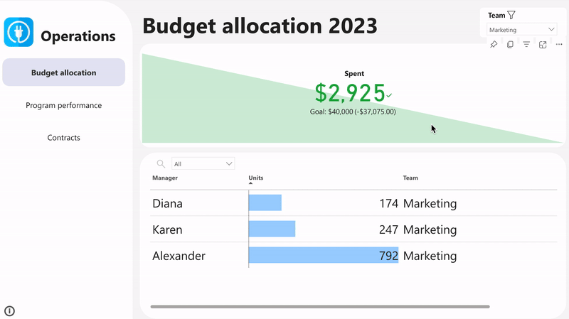
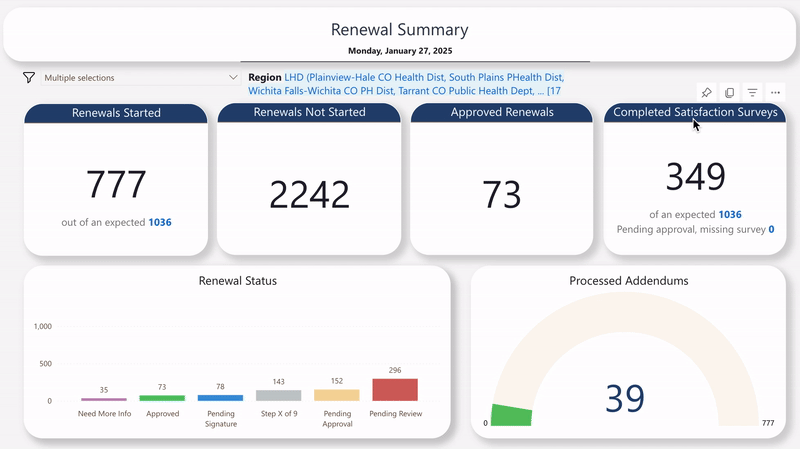

An operations team needed a more consistent way to track
licensing costs for technical resources (Microsoft enterprise licenses, Adobe, etc.).
They had several csv files listing users, the resources, and the costs. Their requirements were
to consolidate the spending reports, balance them against the allocated budgets
for each of the teams, and see when overspending was occurring.
Because report users had Power BI Pro licenses, this report was able
to be developed with Power BI and used as a functional report (as opposed to static).
See more

This project was focused on tracking KPIs for multiple teams who complete a program renewal process each year for their clients. They wanted to track what statuses client renewals were in, including how many had been completed. They also wanted to filter based on client regions. I used DAX studio to add a visual showing which filters were applied.
Most of the data here was extracted daily from
an excel file and stored in a SharePoint list that
was being modified as team members processed client
renewals. I also added to the model an Oracle table
holding specific region information and joined it to
existing data using a unique client identifier. In this case,
we also wanted to be able to filter by all regions (of Texas)
and local health departments. To do this, I created a hierarchy
of regions and local health departments within each to allow
users to select specific areas.
Unfortanately, the quality of the dashboard recording refused to cooperate at the time
of this posting, so I'm crossing my fingers that all the figures aren't completely
unreadable.